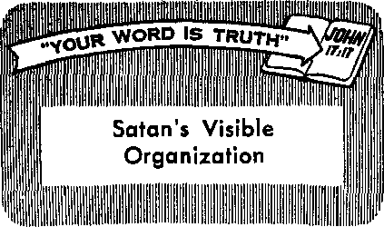

Freedom of Worship in the Schoolroom
F=>Z\G>E 13
Body Build and Your Health
The Versatile Pineapple
MARCH 22, 1962
THE MISSION GE THIS JOURNAL
News sources that are able to keep you awake to the vital rwues ot BUT times must be unfettered by censorship and selfish interests. "Awake!" has no fetters. It recognizes facts, faces facts, is free to publish facts. It it not bound by political ambitions or obligations; it is unhampered by advertisers whose toes must not be trodden on; it is unprejudiced by traditional creeds. This journal keeps itself free that it may speak freely to you. But it does not abuse its freedom. It maintains integrity to truth.
"Awake!" uses the regular news channels, but is not dependent on them. Its own correspondents are on all continents, In scores of nations. From the four corners of the earth their uncensored, on-the-scenes reports come to you through these columns. This journal's viewpoint is not narrow, but It interna Hana!. It Is read in many nations, in many languages, by persons of all ages. Through its pages many fields of knowledge pass in review—government, commerce, religion, history, geography, science, social conditions, natural wonders—why, its coverage is as broad os the earth and as high as the heavens.
"Awake!" pledges itself to righteous principles, to exposing hidden foes and subtle dangers, to championing freedom for all, to comforting mourners and strengthening those disheartened by the failures of a delinquent World, reflecting sure hope for the establishment of a righteous New World.
Get acquainted with “Awake!” Keep awake by reading ''Awake!''
Btl Published Simultaneously in the Untied Statbb by the WATCHTOWER BIBLE AND TRACT SOCIETY OF NEW YORK, INC. 117 Adams Street Brooklyn 1, N.Y.. U.S.A.
and in England by
WATCH TOWER BIBLE Wateii Tower House, The Ridgeway N. H, Knobs, Preaidfflii
Printing this i«ua; 3,600,000 4d
It ptblMti Ip fJw ftnwfnj 25
SemlPiftntlily—Afrikaans. Clnyonja. Danish, Dutch, Ent-llsh, fflrpiiah, French, German, Greek, I Lallan, Japanese, NtHtregtan, Portuguese, Spanish, Swedish, Ta&alog, Zulu. Monthly—Cebu-Viaiyon, Chlnesa. Itoe&no, Korean, Malayalam, Mlah, Tamil, Ukrainian.
Yearly subscription rates Offset for Murtinonthiy editions
AMerlea, U.S,, 117 Adanw St., BnxJdyn >\y.
Amtrall*, 11 Beresford Rd., Strethflald, N.S.W. 8/-Canada. 150 Bridgeland Ave.. Toronto 19, OnL |1 England, Watch Tower House,
N»W Zealand, 621 New North Rd., Auckland, R W. 1 ?/-fjwtJj AfrliO, Private Bag, Elandsfcntaln. Tvl.
Afotittilr dost Jul/ sfee atore
AND TRACT SOCIETY
London N.W. 7, England Grant SLTTfift,
* copy (Australia, 5d; South Africa, ftmfttawtaW Jhoold be sent io lb* nftcs
Id jdut country. Otherwiae send your remittance to London. NotlM Of expiration la tent at hast two i^uea before subscription expires.
CHANGES OF ADDRESS shoild reach nt thirty aayi Wore yoor mtying date. Give mi year aid and new odirtte (it powIMe, yair old addreia label). Witch Tower, Wateh Taww Hagio, The Ridgway, Lm* don N.W. 7, England.
Entered as second-clasa matter at Brooklyn, N.Y, JWnM In ftitfjjirf
The Bible translation and In “Awake!” Ie the Now World Troailatlon of the Holy Serlptvres, 1961 edition. When other tran&latlone are u$trf the following aymbob will appeal* behind the citations:
A0 - American Standard Vereton AT - An American Translation AV - Authorized Version (1611) Da - J. N. Darby's Torsion
Dil ~ Catholic Douiy yersloft JEX? - The Emphatic. Dtajjlott JP - Jewish Publication Boe. Le — Isaac Laeser's version
Afo - James Moffatt's version /£□ - J. B. Botbarhain'B version REJ - Hsdaad Standard Version Yff - Robert Yotni'a w.-icn
CONTENTS
Freedom of Worship in the Schoolroom 13
Jehovah’s Witnesses—as Seen by Others 18
Body Build and Your Health “Spin s ter ettes”
The Versatile Pineapple Preaching by TV in Brazil “Your Word Is Truth”
Satan's Visible Organization Watching the World
20
23
24
26
Volurn# XLIII London, England, March 22, 1962 Numbar t
WE HUMANS are capable of expressing thanks in many ways. We may show our gratitude by simply saying “Thank you” or by writing a note or a letter or by sending flowers or a “thank you” card. Any one of these is adequate, but the “thank you’s” that seem to be remembered the longest are those we feel and see rather than those we read and hear. For the expressions of appreciative eyes, the warmth of a person’s smile and the grip of a hand that says “Thank you” often speak out more eloquently than words. And the good that flows from such loving gratitude is capable of lifting the hearts and spirits of others.
Author A. J. Cronin tells of a doctor that he knew in South Wales who prescribed in certain cases of neurosis what he called his “thank-you cure.” When a patient came to him discouraged, pessimistic and full of his own woes, but without any symptoms of a serious ailment, he would give this advice: “For six weeks I want you to say thank you whenever anyone does you a favor. And, to show you mean it, emphasize the words with a smile.” “But no one ever does me a favor, Doctor,” the
patient would often complain. “Whereupon, borrowing from Scripture,” Cronin says, “the wise old doctor would reply: ‘Seek and you will find? Six weeks later, more often than not, the patient would return with quite a new outlook, freed of his sense of grievance against life, convinced that people had suddenly become more kind and friendly,” Perhaps a “thank-you cure” can make your life brighter.
It is known that failing to express appreciation can make people feel miserable. When a taxi driver returned a man’s wallet that he had found in his car, the owner took the wallet without a word. The taxi driver felt cut at heart. “If the guy had only said ‘Thanks,’ ” he said.
An employment officer asked a jobseeker why he quit his former job. His reply: “For fifteen years I had never heard one word of thanks.” The burden of ingratitude was heavier to bear than the work load. A smile of appreciation, a reflection of thanks in some way would have made the difference. A person who receives any good without giving thanks for it deprives the giver of his due, which is an expression of gratitude. He also sets a bad example. Not to express thanks is to return evil for good. Perhaps that is why an Ingrate is referred to as the lowest type of man.
On the other hand, the expressing of thanks can bring out the best in people and encourage them to greater activity and industriousness. For example, Arnold Bennett, American mathematician, reportedly had “a publisher who boasted about the extraordinary efficiency of his secretary. One day while visiting the publisher’s office Bennett said to her, ‘Your employer claims that you are extremely efficient. What is your secret?’ 'It’s not my secret,’ the secretary replied. ‘It’s his.’ Each time she performed a service, no matter how small, he never failed to acknowledge it. Because of that she took infinite pains with her work.” Maybe your honest and sincere appreciation can help others do more and help bring out the best in them.
Of all people Christians should bear in mind that their appreciative dealing with their fellowman in a loving way may not only inspire better work but also grateful thanks to God in the heart of the recipients of their kindness. The apostle Paul, for example, when waiting to the congregation at Corinth, said: “Thanks be to God for putting the same earnestness for you in the heart of Titus, because he has indeed responded to our encouragement.” Here we see fine works resulting in thanks. Our loving concern for people is a way that we humans can express thanks to God for his loving-kindness to us. Remember, thanks begets thanksgiving. —2 Cor. 8:16, 17; 1 John 4:20, 21
Admittedly, world conditions are bad, but there are always some things for which we can be thankful. It is harmful to be unthankful. Unthankfulness has led many to deny evident truths about God manifest in nature. This they have done to their everlasting injury. The apostle says: God’s “invisible qualities are clearly seen from the world’s creation onward, because they are perceived by the things made.” However, he argues that wicked men, “although they knew God, . . . did not glorify him as God nor did they thank him, but they became empty-headed in their reasonings.” (Rom. 1:18-21) Their ingratitude led them astray.
ARTICLES IN THE NEXT ISSUE
Spain Suppresses Religious Freedom. Luxuries—Are They Worth Their Price? Do You Leave Religion to Your Wife? Weekends—a Pleasure or a Plague? Showing Respect for the Procreative Gift.
For our thanks to mean anything to us or others it must be expressed in all sincerity and without hypocrisy. It should be accompanied by actions of appreciation. This world has its special days for giving thanks, but is it thankful? The ridh resources of the soil it has squandered in prodigal extravagance. With an umbrella, of smog it has hid the sky, and God’s blue rivers it has turned into filth-carrying sewers. It has tossed Jehovah’s righteous laws and principles in the streets where they are trampled underfoot. It scoffs at virtue and praises the fruits of vice. Yet it comes to God with prayers of thanksgiving. Will the great Jehovah hear and accept such? Listen to his reply: “The sacrifice of the wicked ones is something detestable to Jehovah, but the prayer of the upright ones is a pleasure to him.” (Prov. 15:8) No, such hypocritical thanks is not acceptable to Jehovah.
Be thankful by cultivating a spirit of thanksgiving that finds expression in both words and deeds, knowing that only such is pleasing to God and will upbuild your fellowman.
flHIIJR
it:
ONE would think that with an increase in religion there would also be an upsurge in morality and integrity, at least in Christendom, but not so. Everywhere leading churchmen speak of a moral decline. Dr. John nell, preaching Fifth Avenue terian Church
S. Bonin the Presby-in New
York city, declared that
America's moral standards are steadily “degenerating.” Another New York clergyman, the rector of Calvary Protestant Episcopal Church, Albert B. Buchanan, stated that “the church has failed both God and man," that "practitioners of psychiatry are doing more to save souls than are Christian churches.”
Other religious leaders speak of Christendom’s religions today as ineffective, dying or dead. A British bishop, Dr. Mortimer, blamed Christendom’s religions for the decline in chastity. Rabbi Arthur Lelyveld, a leader of the Jewish Reconstructionist movement, declared: “The great religions of the world are dying”; "religion is simply no longer an effective force in our society.” A report from England asserts: “The Church ... is finished —dead. The ordinary working man no longer believes in what is taught. . . . Religion is out-of-date.”
Do you feel that way about religion— your religion? What circumstances of recent date have provoked serious doubts about the usefulness and effectiveness of religion? Why do men say religion is dying or dead? How can one tell?
One big factor that distinguishes a living religion from one that is dying or dead is its reaction toward immorality and malpractice in general, and especially so among its members. We are told in the Bible that a living religion is one that inspires fear of
W God and turning away from bad, F a fervent zeal'for righteousness.
The inspired Scriptures state: “The fear of Jehovah means the hating II of bad.” “In the fear of Jehovah m one turns away from bad.” Of Jesus Christ it is written: “You loved righteousness, and you hated lawlessness. That is why God, your God, anointed you with the oil of exultation more than your partners.” This hatred for lawlessness and dynamism for righteousness and morality is one of the chief assets of religion and a vital reason for having it in a community. It provides a safeguard against corrupt government and immorality.—Prov. 8:13; 16:6; Heb. 1:9; Job28:28.
But where is there today such fear of God that there is a hatred of lawlessness and a turning away from bad? Where is Christendom’s burning zeal for righteousness? Is it not for the want of these forces that Christendom has gone morally bad?
No Shock or Surprise Left
Let’s face it. Few religious Britons are shocked any more at anything; neither are many Americana for that matter. Even-devout church members are no longer as alarmed at the misconduct of their clergy and leading citizens as they once were. Divorce has become fashionable. Homosexuality is a subject for theater comedy. In fact, the Church of England reportedly declared that homosexuality between consenting adults ought not to be a crime, that suicide and attempted suicide should not be indictable offenses.
When the British Broadcasting Company screened programs on sexual vice, no one was shocked. When teen-age sex orgies and teen-age pregnancies are said to be on an increase in America, there is little surprise. When newspaper headlines screamed: “Vicar Found Guilty of Immorality,” “Cleric Forgets His Shalt-Nots, Held as Thief,” “Baptist Convention Ends in Riot over a President,” “Sicilian Monks Face Murder-Ring Charges," “Bishop Finds Another Church for Guilty Vicar,” “Scuffle in the Nunnery,” and so on, where was that righteous, religious fervor that says, “Let’s clean the scoundrels out”? Where Was the spirit of Phinehas among the people—that spirit that turned the wrath of God away and brought peace to Israel? Unfortunately, there was none. Rather than rebuke the lawbreakers, there was too often a show of sympathy for them.—Num. 25:6-13.
For example, when four leading citizens of Pittsfield, Massachusetts, were imprisoned or heavily fined for breaking a federal law, the town’s preachers and citizens were conspicuously silent. Instead of rebuking the wrongdoers, they rationalized: ‘If these men have violated a law, there must be something wrong with the law.’’ In the end the men were popularly condemned, not for lawbreaking, but for the devious manner in which they did it.
When Earl Beatty, In his fifties, and with three divorces behind him, married an IB-year-old girl, the world merely com-mented on the age difference. When Glynn Wolfe was assigned to his new post as the minister of the Travelers’ Rest Baptist Church at Las Vegas, Nevada, he had been divorced twelve times and married thirteen times, with wives 8,10,11 and 12 still quartered at one of his Hollywood hotels. But who objected? When the duke of Bedford applied for divorce, he merely found that his popularity was enhanced thereby. When the countess of Shrewsbury arrived, smiling and radiant, at the divorce court, she was assured of one thing: whatever the verdict, society would not ostracize her. When Governor Rockefeller of New York announced that he and his wife agreed on a legal separation in anticipation of a divorce, there was not so much as a ripple of comment from the clergy. Representative William F. Miller, the Republican National Chairman and a Roman Catholic, however, did say that he did not believe the pending divorce would hurt the governor’s position as one of the party’s leaders, because the people are no longer religiously inclined to care seriously about the conduct of their leaders.
If the religious leaders and their flocks do not care about the conduct of their leaders, then their religion has become a mockery indeed. It has become a body without force or purpose-—a corpse. Is this true of Christendom’s religions? What do the facts show?—Isa. 29:13, 14; Matt. 7:17-20.
Disturbing Signs
The thing that is causing serious concern among sincere worshipers is not that some religious leaders have gone bad; rather it is the general indifference and the almost tolerant view on their part toward immorality and wrongdoing. For example, when Archdeacon Henry Graham, 51, a member of the Church Assembly (the governing body of the Church of England), a church commissioner, and a resident canon of Ripon Cathedral, had pleaded guilty to an indecency charge and sent his resignation to the bishop of Ripon, the bishop at first decided that Graham should keep all his church posts, including the chairmanship of a moral welfare council. The dean of Ripon, Llewellyn Hughes, said Graham made “an honest mistake for which he has been forgiven." “He is far too good a man for the Church to lose.” "We would not dream of driving him out.”
Would the apostle Paul have handled this case in the same way? Surely, the people need moral leadership. And Paul, recognizing this fact, told the Christians at Corinth to ‘remove the wicked man from among themselves? Wicked men, immoral men, were not to remain in the congregation to contaminate it. They were to be driven out as a warning example to others. Of course, the repentant ones did receive mercy and were forgiven, but they were not left in their responsible positions to be looked upon as moral examples to the flock. They had to prove themselves first to be men of high moral principles and integrity. Religion must demand a clean house if it is to stay alive. Does your religion take such disciplinary action against wrongdoers?—1 Cor. 5:13.
Graham's case is not an isolated one by any means. Vicar John T. Pendleton, 49, who had most of a three-year probation term still to serve, resigned his living after being convicted of committing an immoral act with a 36-year-old man. Instead of being removed from office, the bishop of his diocese merely assigned him to another parish. The bishop kept the whole proceedings as secret as he could, but the truth leaked out. How contrary to Paul’s instruction was the bishop’s conduct! Paul ordered Timothy to “reprove before all onlookers persons who practice sin, that the rest also may have fear.” Does your religion do that? It will if it is Christian, and it must if it is to stay alive.—1 Tim. 5: 20-22.
Time magazine, May 12, 1961, told of the unfrocking of clergyman William B. Thomas, 62, who was removed from office on the charge of adultery, committed with a Sunday-school teacher named Elsie Brandy—and not once, but by Mrs. Brandy’s accounting, “at least 75 or 80 times.” Thomas’ only surprise was that he was not found out sooner. Considering the present liberal view toward immorality on the part of church leaders and churchgoers, it is a wonder that he was discovered at all.
Seriously concerned with the trend, the London Sunday Express, June 11, 1961, asks: “What explains the Church of England’s double attitude to sexual morality? Today the case is reported of an ex-vicar who has been placed in charge of another church while still on probation for a serious offence with another man. Earlier this year a priest convicted of offences against little children was simply moved to another parish. In another earlier case a homosexual offender against young boys was actually ordained after his offence. It may be that these men deserve mercy. Yet how odd that the Church should rarely extend similar mercy towards sinners who are not also perverts. How strange that priests who are divorced for desertion or a single act of adultery are now automatically expelled, while degraded acts of perversion are excused as mere ‘slips’ or ‘lapses? ”
Is this being said of your religion, of your church, of you? It is true that some individuals may, can and do go bad, but what is your religion doing to keep itself dean from corruption? Is it removing wrongdoers or excusing them?
Corruption Widespread
The Church of England is not the only religion beset with these moral problems. On August 5, 1960, in Edinburg, Texas, a young Roman Catholic priest was charged with attempted rape of a 20-year-old college girl as she knelt to pray in the Sacred Heart Church,
On December 3, 1960, the Des Moines Register reported that Roman Catholic priest Lawrence Dudink, 47, pleaded guilty in court to a charge of abducting a 17-year-old girl from St. Mary’s Hospital in Superior, Wisconsin. The police found the priest and the girl in a two-room motel cabin in Phoenix, Arizona.
The Ottawa Citizen, December 29, 1960, reported that “four monks of the Roman Catholic Capuchin order and four other persons have been charged with operating an extortion-murder ring with headquarters in a nearby monastery.” Surely, such is not the fruitage of God’s spirit, the evidence of Christianity in the lives of men. Is there any wonder that men question the vitality and influence of religion?
Riots and Fistfights
Perhaps even more scandalous are the rash of riots and fistfights among priests, nuns and Protestant clergy. On March 14, 1961, a Venezuelan newspaper reported that "two priests tangled in a fistfight in the middle of Mass” in the cathedral of Coro. Castulo M. Ferrer and Victor J. Pineda, both monsignors of the diocese, engaged in a free-for-all at the High Altar. They battled each other with fists and “holy candlesticks.” Only after the police intervened was calm established.
In early October, 1961, in San Dona di Piave, a town outside of Venice, Italy, twenty-three nuns also engaged in a freewheeling brawl in the Convent of the Holy Immaculate Heart of Mary. Here, too, the battle raged until policemen moved in to enforce the peace.
Perhaps even worse was the riot at the Baptist Convention held in Kansas City, Missouri, on September 6, 1961. The convention exploded into a free-swinging fistfight in a dispute over the election of a president. One delegate who either fell or was pushed off the speaker’s platform died of injuries the next day. Police wielding blackjacks had to quell the disturbance.
And on the very eve of Christendom’s latest celebration of the birth of the Prince of peace, and in Bethlehem, the place of that birth, violence erupted between the clergy of the Orthodox and Catholic churches. Sticks and bottles flew in a wild melee that had to be broken up by officers of the peace.
Of what is all this a sign? Is this Christianity or is this religion gone bad? Jesus said that by their fruits you would know them. So, then, judge for yourselves. Sincere people are shocked, and they have every reason to be. The moral conduct of their religious leaders has caused deep consternation in their minds. They~wonder, since this is what their religion leads to, if it would be well to look elsewhere.
The Bible, however, does teach that true religion is a dynamic force in the lives of men for good, that it brings forth fine fruit. So if your religion is marked with divisions, if it is beset with quarrels and fights, if wrongdoers are not rebuked and the wicked are not cast out, then you should look elsewhere, for such conditions are signs, not of a living, but of a dying religion. Look to Jehovah God and to his Word the Bible. Associate with his Christian witnesses and see for yourself that these are persons who really study and believe the Bible and who demonstrate the spirit of God in their lives.—Gal. 5:19-24; 2 Cor. 13:11; Jas. 3:14-18; 4:1; 1 Pet. 2:1; Ps. 97:10.
“Yes, lady, that is correct. And if you are 'not too con-
BY "AWAKE!” CORRESPONDENT IN PANAMa
cerned about physical comfort you may obtain a ticket for a dollar and twenty-five cents. The main difference is that the seats are harder.”
“And only an hour and a half to cross the continent?”
“Yes’m, and sometimes not that long.”
Continental vastness coupled with high cost of travel, as those items ordinarily impress one, made such a possibility seem incredible to the newcomer. But wait! This is Panama. Here the expanse of the continent has dwindled to a mere few miles of terra firma holding apart the mighty Atlantic and Pacific Oceans. Here a coast-to-coast link in transportation, the Panama Railroad, combines the transcontinental and low-cost features of travel, much to the inquirer’s delight.
Ticket purchased, she shared a seat with a well-dressed, dignified gentleman whose white hair bespoke his years. An “old-timer” on the Isthmus he was, she learned, a retired employee of “construction days” of the Panama Canal, and one well qualified to divulge information about this road, the first transcontinental link in this hemisphere.
His obliging manner elicited her questions, the first one being: “Which is older, the Railroad or the Canal?” Her association of the latter with Panama had sufficed in her mind for any transisthmian transportation, except perhaps for a highway.
“The railroad was first by many years,” he said, and as he briefly reviewed the need for such she discerned that he was vividly reliving a time when undertakings were motivated by a refreshing degree of unselfishness, when accomplishments were evaluated in terms of usefulness, when mankind found pleasure and contentment in doing helpful things. To him this railway—the product of painstaking effort, the result of persistence in spite of obstacles, the reward of determined perseverance of individuals willing to strive for a beneficial goal—symbolized that time.
“On the heels of the successful innovation of the steam locomotive,” he continued, “enterprising men throughout the world, and especially England, France and the United States, recognized the commercial and practical value of a link across this narrow neck of territory. Such would eliminate thousands of hazardous and expensive miles of travel around Cape Hom, as well as the dangers and hardships of the overland routes by muleback and dugouts across the continent. Railroading was still a novice of about two decades in the eastern part of the United States, nevertheless developing rapidly and projecting itself into the then Middle West. But before it had come into existence west of the Mississippi River, before California had entered the
Union, before Panama existed as a sovereign nation, an American company was formed for the very purpose of constructing a railroad across the Isthmus of Panama.”
“The short distance to traverse and the lack of any appreciable elevation must have resulted in the quick, easy accomplishment of such a project,” the newcomer suggested.
“To the contrary,” he began to explain, “there were many real obstacles.
Obstacles to Overcome
“The terrain of this coveted piece of real estate proved to be the source of many a headache. Blanketed with dense, snarled, seemingly impenetrable jungle growth; bathed by the relentless heat of an almost-equatorial sun; drenched almost daily at least from May to December by torrential tropical downpours, the very earth challenged the will of the most resolute to tame it. Besides, the soft, clay silt, once cleared of its jungle growth, was forever either crawling right out from under its load, or, if soaked down, it sprawled out over finished portions of track, burying it under tons of soggy earth-pudding.
“These streams crisscrossing the continent, and so placid this lovely day, were potential giants in their unharnessed condition in years gone by. As one writer well put it, they were ‘lazy streams which could rise during a half-hour cloudburst from a trickling brook into rampaging sluices forty feet in depth.’
“The jungle too was alive with creeping, crawling things. Insects? Swarms of them! It was saturated with mosquitoes, yellowfever- and malaria-carrying ones; with fleas and ticks and red bugs; and with ants equal to the task of stripping giant trees of all foliage in a few hours’ time, and none too friendly to man. Tarantulas, spiders and scorpions were there. Snakes! Mighty, crushing boa constrictors; venomous bushmasters, corals, and fer-de-lances; and others of various sizes and kinds slithered through trees and swamp. Beady-eyed crocodiles lurked in murky waters and infested jungle streams. Slinking cats, ready to pounce; sharp-clawed sloths, slow, but adept at protecting themselves; wild animals of varying degrees of ferocity, lived in this, their veritable paradise. Yes, these were the possessors of the jungle, and averse they were to yielding their erstwhile undisputed habitat.
“Another thing, the then-existing centuries-old trails across the Isthmus were fraught with land and river pirates; robbers enriching themselves by intercepting the flow of gold from South and Central America en route to the mother country, Spain. These continued a threat through much of the railroad construction period.
“And suitable, usable materials for rails, ties and other necessary items were not available on the scene. Oh, there were trees, trees everywhere, but none satisfactory for crossties, as they rotted so quickly. The country, an extended arm of New Granada (now Colombia), was not an Industrial area that could provide rails, steel or engines. Everything then had to be shipped in—lumber, girders, cement, food, living quarters.
“Labor problems, too, so common today, were not unheard of in those days, although of a somewhat different nature. The big question then was, Where would the laborers come from, since there was insufficient manpower in the immediate environs to negotiate such an arduous task?”
“Why, this is fascinating. Please continue,” the newcomer petitioned.
Progress Made
Delighted to impart more of the past still so intriguing to him, the gentleman continued: “As early as 1835 the New Granada Legislature passed a law conveying important privileges to certain United States citizens in event of their building a railroad across the Isthmus. And a treaty made between the United States and New Granada in December, 1846, guaranteed the United States a right-of-way across the Isthmus for any mode of transportation. Two years later the discovery of gold in California resulted in a stampede westward, not only by those whose imaginations were already tickled by the love of adventure and the lure of a treasure hunt, but also by financiers anxious that the ‘pay dirt’ should put a nation experiencing economic stress on its feet (for the Mexican War was only recently won),
“To make the West more accessible, that same year the United States Congress authorized contracts for the establishment of two lines of mail steamers. One was to run from New York via New Orleans to Cha-gres (Panama, Atlantic side); the other, from the Pacific side of Panama to California and Oregon. The man who bought the Pacific line, and he was a shrewd businessman, incorporated it as a part of his preconceived plan to build a railroad across Panama, which, he anticipated, would be finished in eight years. In 1849 a company was incorporated under the laws of the State of New York, and the line of the road was located. May, 1850, was the real beginning, and on the Atlantic side the first ground was broken. Clearing of a right-of-way proceeded."
Above the rumble of the engine that made her trip possible, the newcomer thought she could hear the chop, chop of the machetes wielded by stalwart men as they unmasked the jungle, laying it low. She felt their uncomfortableness as they worked, oftentimes to their waist, or deeper, in slimy, brackish water untangling coastal mangrove swamps; she dreaded for them a possible encounter with open-jawed crocodiles or some deadly snake. She wondered how they were able to accomplish anything more than try to calm the agonizing gnawing of the red bugs and the fleas and the ticks that adhered to or tunneled into human flesh. She saw them, tired and weary, trudging back to inadequately equipped shelter for the night, lodging without loved ones to offer encouragement for the next day’s toil.
She imagined the “field day" for the insects hovering over that concentration of humanity. She felt the throbbing headaches, the pounding pulse, the rigorous chills, the burning fever, as many a laborer—pallid and sallow, sapped of vitality —sickened and died in the steaming tropics, victim of malaria, yellow fever, or even cholera.
Delightful it was to know that as that first year of construction closed the completion of the first eight miles of the road was in sight, and that one thousand workers were in the employ of the company.
Their joy she felt as, in 1851, a thousand passengers on their way to California were safely transported from the steamships at the mouth of the Chagres River to Gatun.
“Now, with assurance of safe passage part of the way for the ever-increasing numbers on their trek to the enriching West, golden years for the railroad began in 1852,” her informer continued, “and by July twenty-three miles of road were finished. The project that was not intended to be opened until the whole line was completed had now become an incomeproducing venture while still in the process of construction. In spite of accidents and tragedies, workers pushed on, and in July, 1854, a train ran within a mile of summit, leaving a total distance of twelve miles to complete.”
“What was happening on the Pacific side?” the listener was now inquiring.
“Well,” said the old gentleman, "sometime in 1852 men and material were shipped around the Horn to commence work from Panama on the Pacific side. Up the valley of the Rio Grande the working force forged toward summit to meet the force coming from the other side. And, January 27,1855, at midnight, in a pouring rain, rails were joined. The 47 g miles of railroad had been started more than four and a half years before, and it had cost nearly $140,000 per mile in finance and one thousand human lives, even though much of the natural contour of the country had been followed by the road.”
“But,” he added, “much of the finished -road was of a very temporary nature, and, in order to discourage traffic as part by part it was made more permanent, tariff was raised to as much as $25 for first-class passengers and ten cents a pound for personal luggage. Then the completion of the Union Pacific Railroad, which was commenced in 1869, dealt a hard blow to the Panama Railroad, for it took away from the road much of its business, and rapidly the Panama road deteriorated.”
Change of Ownership and Relocation
“In 1879 the French Canal Company purchased the railroad for $17,000,000, and in 1904 the United States took it over when it acquired the property and assets of the French company.”
“Does the present track follow the original right-of-way?” his inquirer asked.
“No, lady, when definite plans for a lock and lake canal were adopted and construction started on the waterway, several changes in the location of the railroad became necessary. The existing line had to be rebuilt to handle traffic made by the canal construction and at the same time replace the existing road with the relocated line, all the while carrying on operations without delay to canal construction. After the relocation was complete, there was a difference of only two hundred yards in the length of the line between the old and the new.”
At the end of the picturesque journey at the opposite side of the continent, the two passengers looked back down the two shimmering streaks of rail as the old-timer once more expressed himself before saying Good-by: “Men braved great difficulties, endured many hardships, persevered through real odds to produce, largely for commercial gain, something beneficial, yet so transitory as this railroad, little among railroads. Could it not be possible that if we today would be as determined to achieve goals of more lasting value that we too could experience maybe even greater joy and satisfaction than those who realized their dream come true in the uniting of the rails that had been inched from both oceans—the rails that formed the tracks for the PRR-transcontinental?”
WHATS IN A NAME?
“Anyone with doubts about 'what’s in a name?’ will have them ended it he tries to make shipments to Ciudad Trujillo, the name by which the capital of the Dominican Republic was known from 1936 until recently,” reports the New York Times. “Shippers failing to use the restored name of Santo Domingo in documents as well as on merchandise will find their shipments subject to penalty by the Dominican Republic, according to a special notice added to the world trade bulletin of the Commerce and Industry Association of New York. Santo Domingo is the city’s original name and dates from its founding in 1496.”

r3E present is a time of tension, especially a time of international tension. The nations of the world, irrespective of the political bloc to which they may belong, are concerned with the perpetuation of their ideologies, their way of life, yes, their very national existence. Because of this they strive to elicit the loyalties of their people in various ways, and in particular do they strive to instill national loyalty into the hearts and minds of youth. One of the ways certain well-meaning patriots are seeking to do this is by means of more rigid patriotic exercises.
For example, as reported in the Los Angeles Herald, November 11, 1961, on a recent trip to Russia Thomas P. Braden, president of the California State Board of Education, became convinced of the need of daily recitation of the pledge of allegiance to the American flag by the pupils in all the public schools in his state. Of the same mind was the Wisconsin State Legislature, for, according to the Milwaukee, Wisconsin, Sentinel, November 9, 1961, it passed a bill requiring all children in public schools to repeat this pledge daily; doing so over the veto of Governor Nelson, who warned that the bill would be declared unconstitutional. And in a recent issue of The Forty and Eight er, a United States servicemen’s publication, an editorial insisted that there simply is no such thing as waving the flag too much.
This trend in many parts of the world puts a challenge to the people: Are they able to pursue their goal without trampling underfoot the very freedoms that they seek to preserve? With the upsurge of patriotism, are they able to uphold the freedoms for which their flag stands by respecting the rights of those who, not for political reasons, but because of religious belief cannot conscientiously participate? These are questions that come to the fore particularly in schoolrooms where there are students who are Jehovah’s witnesses.
When considering this matter it is well to bear in mind that a person may engage in patriotic ceremonies and still at heart be disloyal to his country, or he may be a law-abiding citizen and yet have religious scruples against participation. That religious views might enter into the picture should not be difficult to understand. At one time the Quakers in England were severely persecuted because they refused to salute public officials by taking off their hats in their presence. The Quakers regarded such an act as idolatry. As a result some were beaten and imprisoned and even put to death. Yet would anyone today who respects freedom of worship accuse them of having been disloyal to England? No!
Saluting the Flag
Justly, therefore, in ruling on the case styled West Virginia State Board of Education versus Barnette the Supreme Court of the United States ruled in 1943 that the Bill of Rights, which guards the individual's freedom to speak what is in his mind, also guards his right to refuse-to do and say what is not in his mind or heart. True, this Bill of Rights is an American document and so is not binding in other lands, but its essence and principles are stated in the United Nations Declaration of Human Rights and are therefore most widely recognized.
While the United States Supreme Court has thus upheld the stand taken by the children of Jehovah’s witnesses in refusing to salute the flag on religious grounds, some schoolteachers urge these children to take part in patriotic exercises by asking them to hold the flag while others salute it or to march in formation behind one holding the flag. But Witness children do not participate in these activities, just as they refrain from saluting the flag, for the principle Involved would still be violated. However, they may stand during flagsalute ceremonies, since simply rising to one’s feet is not generally what constitutes the act of saluting, which is what they consider to be idolatrous.
Some persons may well ask, What is the basis for these religious scruples? They are based on the principle expressed in the second of the Ten Commandments given by God to the nation of Israel. It reads: “You must not make for yourself a carved image or a form like anything that is in the heavens above or that is on the earth underneath or that is in the waters under the earth. You must not bow down to them nor be induced to serve them, because I Jehovah your God am a God exacting exclusive devotion.” Jehovah’s witnesses believe that the saluting of a flag comes under such prohibition, which, according to the testimony of history, is the same belief as that of the early Christians who lived under the Roman Empire.—Ex. 20; 4, 5; 1 John 5:21.
The fact that saluting a flag Is a religious act is recognized, not only by Jehovah’s witnesses, but by other authorities. For example, The Encyclopedia Americana states: “The flag, like the cross, is sacred. . . . The rules and regulations relative to human attitude toward national standards use strong, expressive words; such as . , . ‘Reverence to the Flag,’ ‘Devotion to the Flag.’ ”—1945 Ed., Vol. 11, p. 316.
A like view is expressed in comments in The Interpreter's Bible, where it says: “There is a cult of ‘patriotism’ which with many has taken the place of the one God of Jesus and of the Hebrew faith .. . What is happening in America and elsewhere is a process of syncretism, by which an everdiminishing element of Christianity and an ever-increasing element of nationalism are entering into the alloy known as modern religion. . . . The new religion has its rituals. The flag is supplanting the cross.” —Vol. 7, p. 847.
Similar sentiments are expressed in the book Families in the Church—A Protestant Survey, which is a report on a recent survey of Protestant churches in the United States. It says: “We have been developing in America precisely the sort of folkreligion that Amos, Hosea and Isaiah so bitterly condemned ... A recent song hit turned up about ‘the Bible on the table and the flag upon the wall.’ This seems to identify religion and patriotism so closely that ... we blithely assume that what we want for ourselves must be what God wants us to have.”—P. 171.
It is thus seen that Jehovah’s witnesses are not alone in noting that saluting the flag has religious significance.
National and School Anthems
A parallel situation involves certain types of music. For example, Jehovah’s witnesses do not join in singing songs that extol any nation, Institution or human creature, nor do they rise to their feet when such songs are played, because this would indicate their concurring in the sentiments expressed in such songs. But if they happen to be standing when playing of the song begins there is no objection to remaining on their feet, because no action is thus taken by them that constitutes participation in the ceremony.
Oftentimes these songs are used in school music classes for practice, and while Witness children generally have no objection to playing any music simply as a means to learn to play a musical instrument, they could not join in playing these songs at school assemblies or rallies or at community gatherings as part of the program. However, when it comes to singing the words, even in practice, they cannot participate in this because this would be giving expression to sentiments that are objectionable to them from a religious standpoint. During periods of music instruction they have been known to sing simply the notes, though, if the teacher wants them to do this in order to cultivate musical talents such as reading notes or cultivating the voice.
But why these objections? it may be asked. Because such patriotic songs express the same fundamental ideas that are embodied in the pledge of allegiance to the flag; and since Jehovah’s witnesses do not salute the flag of any nation, consistently they do not participate in ceremonies involving national anthems. They take to heart the words of the Lord Jesus when he said of his disciples: “They are no part of the world, just as I am no part of the world.” “My kingdom is no part of this world,” he added. As ambassadors for this heavenly kingdom, they observe strict neutrality as to the affairs of the worldly nations.—John 17:16; 18:36; 2 Cor. 5:20.
Since a national anthem Is actually a hymn or a prayer set to music, Jehovah's witnesses are governed in this matter by what God says in his Word the Bible is acceptable in prayer. Jesus himself, who taught his followers how to pray, said in prayer to God: “I make request, not concerning the world.” While it is true that there are many sincere persons in all nations, the Bible truth remains unchanged: “The whole world is lying in the power of the wicked one,” Therefore, the Christian apostle John pointedly stated: “The world is passing away and so is its desire.” For these reasons Jehovah’s witnesses do not join the nations in praying for the perpetuation of the present system of things. —John 17:9; 1 John 5:19; 2:17.
So, too, with school songs and other compositions that glorify or extol institutions or organizations or certain human creatures. These are not sung or recited by Jehovah’s witnesses—not out of disrespect on their part, but because they reserve all such veneration for Jehovah God.—Isa. 2:17.
Holidays, Prayer, Religious Discussions
It is also customary in most public schools in Christendom to celebrate such events as Christmas, Halloween, sometimes birthdays, and other events that have a religious background.
The Witness children do not share in such religious holiday activities, because, among other things, these celebrations almost invariably embody practices that are of pagan origin. And in this connection Jehovah’s witnesses follow the counsel found in the Bible at 2 Corinthians 6:14-17: “What sharing do righteousness and lawlessness have? Or what fellowship does light have with darkness? . . . ‘Therefore get out from among them, and separate yourselves,’ says Jehovah, ‘and quit touching the unclean thing’; ‘and I will take you In.’ ”
However, Jehovah’s witnesses do endeavor to cooperate with the school’s program of education to the extent possible, even during holiday seasons. So when various assignments are made, such as those involving artwork, Witness children carry these out even when they may involve religious symbolism, accepting such assignments for their educational value. However, they do not join the class in commemorating such holidays or birthdays by singing songs that carry religious sentiments or by participating in class parties.
Another religious practice that is common in many schools is the ceremony of repeating the “Lord’s prayer.” But at the very time that Jesus gave this prayer to his followers as an example to follow, he said: “When praying, do not say the same things over and over again, just as the people of the nations do, for they imagine they will get a hearing for their use of many words. So, do not make yourselves like them." (Matt. 6:7, 8) Since the daily repetition of the words of the “Lord’s prayer” in school is therefore not in harmony with Jesus’ counsel, Jehovah’s witnesses do not join in this ritual. While they definitely accept the prayer and copy the example it sets, another reason why they do not participate in the ceremony is that they do not believe in interfaith and so cannot join in prayer under the direction of public education instructors or members of other churches.
Their not believing in interfaith, however, does not prevent them from listening to talks by representatives of other religious organizations when these are arranged for by the school, not to proselytize, but to inform the students of the nature of the organizations in their community. Similarly, when invited, Jehovah’s witnesses gladly report to school groups on their religious beliefs. If, as is done in some lands, teachers ask Jehovah’s witnesses to give their students regular instruction In the Bible, they are glad to do so, provided attendance at such sessions is not compulsory. In this they uphold for the others in the class the freedom of worship that they seek for themselves.—Matt 7.*12.
Doctrines, Theories and
Special Programs
At times class discussion of textbook material will touch on matters that are in fact expressions of religious viewpoints or theories of science that are not established as truth. For example, poetry often reflects belief in the immortality of the human soul, and the theory of evolution comes up for discussion in various school courses. When such matters are discussed, it is important that respect be shown for the religious views of the students. No attempt should be made to force Witness children to accept as truth any doctrine or theory that they believe to be in conflict with the Bible. So when questions are posed that involve conflict with their religious beliefs they should be permitted to answer thus: “According to God’s Word, the Bible, the answer is thus and so, but according to the textbook the answer is this.” By both teacher and Witness children meeting each other part way both can benefit.
Then, too, there are plays or musicals presented from time to time in school. Whether Witness children take part in these or not depends upon the nature of the play and what is involved, and for this reason it must be left to individual conscience. To the extent that religious or nationalistic factors become prominent, the Witness youth might have scruples against participating or attending.
Membership in School Organizations
There is also the matter of belonging to school organizations. Participation on the part of Witness children is again a matter for personal determination in harmony with one’s Christian conscience, even where membership is conferred automatically on the basis of scholastic achievement. In these cases the child, along with his parents, takes into consideration the purpose of the organization, the nature of the initiation ceremonies, the time that participation will require and related factors.
However, since Jehovah’s witnesses do not participate in political elections in any way and do not seek elective office—because they are neutral as to such worldly affairs—Witness youths do not participate in these things, seeking office or participating in an election, even on a small scale in the classrooms or in the larger school organizations.
The Teacher's Position
It is fully appreciated that each teacher would like to see uniformity in the classroom in regard to all these matters. Should many request exceptions, and that for trivial reasons, certainly the result could be disrupting and confusing. However, when freedom of worship is involved, then uniformity and convenience must yield. As United States Chief Justice Stone observed: “I cannot say that the inconvenience which may attend some sensible adjustment of school discipline in order that the religious convictions of these children may be spared presents a problem so momentous or pressing as to outweigh the freedom from compulsory violation of religious faith that has been thought worthy of Constitutional protection.”—Separation of Church and State, by Johnson and Yost.
Not to be overlooked is the fact that the presence of the issue presented by Jehovah’s witnesses as to nationalistic and religious activities in a schoolroom has definite advantages. For one thing, it serves the very practical purpose of teaching the real meaning of freedom.
This point was made in an editorial that appeared in the Victor Press, May 4, 1961, which discussed the hiring of one of Jehovah’s witnesses to work at a school in Victorville, California. It said: “We believe the presence of Mr. Odom [the Witness] on the school grounds gives the pupils’ teachers an excellent opportunity to present an object lesson in the true comprehension of our democracy. They can say to their children: ‘This man does not salute the flag because he is free. He does not have to if he does not want to.’ ”
Further, all good teachers are concerned with teaching their children loyalty and moral courage. For their pupils to see such striking examples of loyalty to one’s religious beliefs and of moral courage is bound to have a salutary effect upon them; especially in these days when there is so little loyalty to principle and one’s religious beliefs, so little moral courage, and everyone seems to be concerned with conforming and being thought well of by others. These living examples will impress upon their young minds that they also should have the same strength of conviction, the same loyalty and moral courage so as to be able to stand for right principles when put to the test. Surely children who give such expressions of faith and courage are far less likely to show disrespect for school authority than are others, and this is one of the most serious problems facing modem schoolteachers.
No doubt, some persons, concerned about the welfare of the children of Jehovah’s witnesses themselves, may ask: “Is this not imposing an undue hardship on the children, keeping them from participating in the activities of their classmates?” No, not at all. Rather than to be pitied, they are fortunate. Children brought up In the “discipline and authoritative advice of Jehovah” are thereby prepared to resist the pressures that cause so many to go along with the crowd in practices of lawless delinquency and immorality that can ruin their lives and bring so much grief to their parents. Even from early years their lives are filled with purpose because of their confidence in God and in the fulfillment of his purposes for the blessing of obedient mankind.—Eph. 6:4; Prov, 22:6; Ecd. 12:1.
So, when the matter is viewed from
many standpoints, it can be appreciated that sound reasons underlie the position taken by Jehovah’s witnesses on these mat* ters of religious freedom. Obviously their position is not one of disrespect for constituted authority but one that is motivated by respect for the highest authority, that of Almighty God, Jehovah. With a clear understanding of the issues Involved, it should be possible for schoolteachers and others in the community to work together to uphold freedom of worship in the schools, not only for Jehovah’s witnesses, but for persons of all faiths.
• In Switzerland a minister published the following article in his parish bulletin: “My dear Jehovah’s Witnesses, From different parts of my parish, my attention was drawn to the fact that you are going from door to door in my vicinity. You are trying by personal contact to interest my parishioners in certain things that we do not normally discuss at the kitchen table. To tell you the truth, I am very thankful, really very thankful, that you go so courageously from door to door in my parish. Although you are not invited in at every home, you may succeed in recalling to our parishioners’ minds that:
“Apart from bread and play; apart from joy and mourning; apart from success and failure; apart from a fight for life and apart from business, spare time and work, things like religion and faith in Jesus Christ still exist. The fact that you come to see us; is it not a powerful sermon in itself? You have probably noticed that our people are embarrassed by all the talking you are doing for Jesus Christ, or, they are bitter, curious or slightly Interested.
“Maybe our people thought: How can we, in these modern days, spend all our time for such a thing like faith? How can we, in these days when each minute is paid for, spend time for such antiquities and preach things long past? And finally, is It not sufficient that the pastor live for God? Or, perhaps we have answered, Thank you, we do not need any-
—as Seen by Others
thing; we belong to the National Church.’
“Can I ask you this: When you meet people that give you that answer of being of the National Church, continue to ask them questions. For example: What do you really believe? You see, this is what I am thankful for. You manage, just the same, here and there, to awake people with your magazine entitled ‘AWAKE’. ... I admire your courage, and I am rejoicing that you do not let yourselves be discouraged by such Indifference." • Commenting on the United Worshipers District Assembly of Jehovah’s witnesses at Hamburg, Germany, during 1961, The World (Die Welt) of July 22,1961, reported: ‘The devotion with which they bow their heads in prayer is genuine. When an attendant calls out, ‘Watch out, brothers!’ because a car has to be driven up through a pathway, and everyone stands still quietly and attentively at the edge of the path despite the pouring rain, one is filled with too much respect for such conduct, which many . , . term ‘deluded,’ than to begin sneering and critically analyzing. And this form of address, ‘Brother1 and ‘Sister,’ which the ‘Witnesses’ use in such a matter-of-fact way, really has meaning.” There are others who are organized to attain certain goals, the report continued, but "with by no means the same proper conduct in daily living and faithfulness in the responsibilities of life as have ‘Jehovah’s witnesses.’ "

»
OU may have marveled (or shuddered) at the amazing jetlike creation called the __centipede. Contributing to what might be called its speed Is Its multiplicity of legs, which occasionally provoke children to ask; "But do they R-E-A-L-L-Y have a hundred legs, Mommy?” In tact, does any millipede really have a thousand legs?
A millipede never has as many as a thousand legs, but a centipede may have more than a hundred legs! It all depends on the type of centipede, since there are hundreds of kinds. The number of legs thus varies from fifteen pairs on some centipedes to 173 pairs on others. Millipedes out-leg centipedes by several hundred. If millipede greatness is measured by the number of legs, the millipede monarch dwells in the Panama valley, where one kind has 700 legs dangling purposefully from a body of 175 segments, strung one after the other, each with four legs. Centipedes differ from millipedes in having only one pair of legs to each segment.
The number of legs on millipedes in general is rather hard to come by, if predaeness is required. But millipedes often have about two legs for every one that centipedes can boast of.
In tropical countries millipedes come out in numbers after rain, when they may be seen crawling over the ground and climbing bushes. Fortunately, millipedes are mostly vegetarian and so do not have poison glands. A rather big millipede scurrying along on its double set of legs can be a rather awesome sight if one is not aware of its gentle nature.
Centipedes, on the other hand, are bugeating, and they are often found in damp places in houses, especially in cellars. One single speedy trip across the floor draws considerable attention and sometimes flurries of consternation on the part of bystanders. Because of its fondness for damp surroundings, a centipede is often trapped in the bathtub, where its appearance may drive a housewife to the verge of hysteria. But now comes the good news for those who abhor the sight of these many-legged creatures: These small centipedes, such as are found in the United States, are helpful to the householder because
t 1 ) ) 1 1 1 1 ) 1 )
) ) ) ) ) I ) 1 1 ) ) i 1 ) ) ) ) ) ) ) ) ) ) t
they efficiently enrich their own dinners with such nutritional tidbits as cockroaches, mosquitoes and flies.
Efficient, indeed, is the centipede as a pest exterminator. Says The Smithsonian Series volume on insects (No. 5): “Unless you are fond of roaches , . . the house centipede should be protected and encouraged. The writer once placed one of these centipedes In a covered glass dish containing a female Croton biig and a capsule of her eggs which were hatching. No sooner were the young roaches running about than the centipede began a feast which ended only when the last of the brood had been devoured. The mother roach was not at the time molested, but next morning she lay dead on her back, her head severed and dragged some distance from the body, which was sucked dry of its juices— mute evidence of the tragedy that had befallen sometime in the night, probably when the pangs of returning hunger stirred the centipede to renewed activity. The house centipede does not confine itself to a diet of live roaches, for it will eat almost any kind of food, but it is never a pest of the household larder."
Though the small house centipedes of North America are generally listed as harmless to man, the medical text, The Merck Manual, reports that a species of centipedes in the southern part of the United States can produce a wound, causing local inflammation; "The burning, aching, local pain and the other symptoms usually disappear in 4 to 5 hours, and fatalities probably never occur.”
Thus the larger kinds of centipedes can be dangerous to man, especially those in the tropics. Some tropical centipedes reach a length of one foot or more and have a body as thick around as one’s thumb. One species of tropical centipede may attain a length of eighteen inches and can inflict a bite that Is quite as dangerous as the sting of a scorpion. If one seizes them, they become ferocious and bite energetically. Hence it is best to let centipedes tend to their business of bug eating.
Is one disturbed by a fly? buzzed by a mosquito? upset by a roach? Then remember that Mr. Centipede is always busy on your behalf. If one jets past you on its many legs, just assume it is on its way to dinner.
WHAT is the relationship between bddy build and one’s health? Studies indicate that each Mind. “A preliminary finding is that persons who are high in endomorphy are relatively immune from peptic ulcer..., Gall bladder disease seems to prefer people who are strong in both endomorphy and mesomorphy (stomach and muscle). Ectomorphs go in for nervous difficulties. High blood pressure is the group failing of mesomorphs.”
It must be stressed that findings thus far between body build and disease susceptibility are only of a very general nature. The cause of most disease is too complicated to conform to a simple concept. Some authorities do not place much
type of body build has its strong points, its tendencies, its dangers and its distresses. Researchers point out that there is a greater frequency of some diseases in persons exhibiting a predominance of a particular body build. Thus the knowledge of the general relationship between body build and health may provide the basis for some preventive measures and at the same time throw some light on why it has been said that one man’s meat is another’s poison.
The combination of weight and height of a person results in a general build of body called habitus. This word is defined as “the body build and constitution, especially, as related to predisposition to disease.” There are three general divisions. The heavy ones, usually high in what is called endomorphy; the medium or muscular ones, usually high in mesomorphy; and the thin ones, usually high in ectomorphy.
The study of body build in relation to health is being given increasing consideration these days. “Research is under way to determine the relationship between various diseases and hereditary constitution,” reports the volume It’s Not AU in Your weight in the matter of body build; some find it of paramount importance. “The problem of basic individual difference,” says Dr. William H. Sheldon in The Varieties of Temperament, “is beginning to loom as the most important general problem in medicine.” Another doctor who has long studied body build and susceptibility to disease writes: “There is no question that a relationship between habitus and constitutional predisposition to certain diseases does exist. In 1918 the relation between habitus and morbidity was studied in 200 male patients observed in Vienna. The greater tendency to pulmonary tuberculosis in the longitudinal type was confirmed. The muscular and digestive (lateral) type of person had a greater tendency to develop .. . nephritis, the muscular type had greater disposition to neurologic, myalgic, or arthralgic, pain.” (Constitution and Disease, Julius Bauer, MD) Thus the findings are not a matter of limiting a disease to a certain body type but simply that some body types more readily develop certain diseases.
It will be interesting to examine what some researchers have found in this matter, both as to disease susceptibilities and health assets.
Digestive System Dominant
This is known as endomorphy; with this bqdy build the abdomen is bulkier than the chest and the limbs are comparatively short. Those high in this body component are said to have splendid digestion; they can enjoy a heavy meal that would make a thin person most uncomfortable. With the endomorph build usually comes an unusual freedom from nervous disorders. Relaxation comes easily. Sleep also comes easily and is deep.
Dr. Sheldon reports that those high in this body type can get along with less sleep than those of ectomorphic (thin) build. He states, however, that those of endomorphic build often get too much sleep. Hence those 'of this body type need to guard against the tendency to sleep in overdoses, a tendency that can become habitual.
Studies indicate that this body type does not often fall into the snare of overdoing exercise, since there seems to be a tendency to dislike vigorous exercise. This body build is said to “work off” less food by exercise than others.
Food is said to be a sheer delight for those of this body type, and almost any kind can be eaten without difficulty, including coarse foods and fibers. Midget meals do not seem to fit the capacious digestive tract of these persons, and they seem to do well with a moderate breakfast and two fairly large meals a day. There is a tendency, as Dr. Sheldon puts it, for these persons to eat “more than is conducive to [their] best mental development.” Moreover, if they are not carefully moderate in food, especially with fats, oils, creams, sugars and gravies, they may easily put on thirty or more pounds every five years until middle life. Though persons high in other body types may regulate their intake and output of energy quite automatically, a person high in endomorphy often cannot rely on his automatic regulations and may need to follow a dietary regimen prescribed by a physician, if he wishes to avoid the consequences of his constitutional trait.
What about the goal of an ultra-slim figure for those of endomorphic build? They should remember that a relatively heavy build is natural to their body type, and as Dr. H. J. Berglund writes: “Weight tables, as published by insurance companies and publicized on penny scales, are of little value. Even the recent breakdown into three different tabulations for slight, medium, and heavy skeletons, does not make them individual enough. A person with small bones is probably an endomorph who is more likely to be healthy with a heavy load than many with more expansive skeletons.”
Taking special precaution to guard against overdieting, overeating and oversleeping is thought to be beneficial for those high in this body type.
Bones and Muscle System Dominant
This is called mesomorphy. Those high in this body type have heavy bones and well-developed muscles. They may be heavy but not overweight. As a group these persons are said to be endowed with an unusually rich health capital. Among their health assets are tremendous physical drive and endurance, with a relatively low sleep requirement, all of which gives them not only more energy than others but more time. Another benefit is said to be infrequent food requirements, so that they often can go a long time without the thought of food. Still another benefit of this body build is said to be the relative immunity to common nervous disorders.
There is a natural love for exercise on the part of those high in mesomorphy; and since this body build benefits most from exercise, there may be a tendency to overdo it, spending too much time on bodily training. Hence persons of this body type need to watch that the craving for exercise does not get out of hand, consuming valuable time that should be devoted to more essential things.
If the food habits of youth persist through middle age for persons high in this body build, body fat may accumuiate. Hence it may be necessary for many persons of this type to go easy on oils, fatSj creams, gravies and concentrated sugars.
Since high blood pressure is quite common among persons prominent in mesomorphy, they are usually advised to take special care to avoid dangerous emotions, such as jealousy, resentment, anger and rage.
Skin and'Nervous System Dominant
Those high in ectomorphy often have long limbs and delicate bones, long neck, small stomach and a relatively short digestive tract. Thus the large, heavy meal may overload the small stomach of these persons, causing great discomfort. They are said to do better with many small meals through the day.
Some studies indicate that persons high In ectomorphic build are relatively free from appendicitis, gall-bladder disorders, nephritis and many infections, except those of the upper respiratory tract. Persons of this body type are said to have a lower degree of heart and arterial diseases than those of the other two body types, and so they are often regarded by insurance companies as excellent mortality risks. Weight gains often are only three or four pounds after adolescence, so that the weight curve is consistent with long life expectancy.
Tenseness is said to be common among those of this group, and there is usually a hypersensitivity to irisect bites, sometimes a tendency to unexplained itching.
Because those high in ectomorphy present a relatively larger body surface to the impacts of environment, the result is greater energy expenditures, coupled with the fact that there is less opportunity for accumulation of reserves (fat, protein, water, etc.). The main susceptibility of the group is that of fatigue, caused partly by the fact that the digestive tract is poorly upheld. Though exercise to strengthen the abdominal muscles is recommended for this group, Dr. Sheldon points out: “Unnecessary vigorous exercise, instead of building up energy in these people, seems to exhaust the already scanty reserve and to leave them inefficient victims of chronic fatigue.”
Despite the tendency toward fatigue, Dr. Sheldon adds that these persons may be just as zealous in their activities as those who have greater energy potential, but those of ectomorphic build may not be able to carry through as well as those with the heavier build. Because of limitations on their energy, coupled with a zeal that may be as intense as those of mesomorphic build, those of this body type may sometimes experience feelings of frustration and dissatisfaction. More sleep is required for those high in this body component, and they must exercise caution in such matters as socializing and staying up late at night. Sometimes persons of this body type succumb to a nervous breakdown before they realize that they cannot keep up with the late hours and pace of those with stronger builds. Thus Dr. Logan Clendening writes in his book The Human Body:
“What can be done to help guide a constitutionally thin or heavy person past his dangers? Considering the inherent difficui-ties of the task, a good deal. For the ones we have called the thin people . . . they should sooner or later be brought to a realization of the very important fact for them that they have not the same powers of endurance as other people with stronger structures. This sounds very logical as put down here, but it is astonishing how long it takes some of these people to come to this conviction, how much turmoil they go through, how many diagnoses are pronounced upon them. My colleagues in the medical profession have been very slow to grasp this idea of the whole man. Rest for certain periods in the day sufficient to renew the stores of energy which these bodies need Is the first element in treatment or adjustment. . . . Other accessories to treatment are exercise to strengthen the abdomen—lying on the back and raising the legs to a vertical position—the wearing of supporting corsets, and an increased diet to fatten up persons of this type. . . . The heavy ones . . , must learn to be abstemious at the table.”
Further suggestions are given in the volume Constitution and Disease for those predisposed to nervous disorders. “It is conceivable that those predisposed to [disorders] of the nervous system may be benefited by vitamin B in doses larger than those required by normal individuals. . . .
With reference to persons of various builds he said: ] Regulation of diet, habits, mode of life, advice concerning choice of profession, periodic examination with regard to the individual morbid predisposition, physical and mental hygiene, are the means at our disposal for making up for what nature has denied to certain individuals.”
Moderation in all habits will do much to help a person of any body build combat adverse predispositions. And yet, as we have seen, what may be moderate for one body type may well be excessive for another. Each one must use good judgment in determining what is moderate for himself. “Be moderate in habits.” (Titus 2:2) And this includes moderation in the use of knowledge concerning health matters, preventive measures, and so forth. The apostle Paul told Timothy; “Bodily training is beneficial for a little; but godly devotion is beneficial for all things, as it holds promise of the life now and that which is to come.” (1 Tim. 4:8) Such knowledge of body build and health “is beneficial for a little.” Use it reasonably. But give your main energies, your main attention, to godly devotion; for by such means persons of all body builds will gain perfect health in God’s everlasting new world.

"BPINBTERETTEB'’
Because of the striking relationship between cigarette smoking and cancer, especially lung cancer, the head of the department of clinical science at the Medical School of the University of Illinois, Dr. A. A. Ivy, has given cigarettes the name of “cancerettes,” Now the Scientific Marriage Foundation has added another designation to the "coffin nails,” as they are also called. Because so many single men specify that they want a woman that does not smoke, the Foundation in a recent bulletin has termed cigarettes "spinsterettes,” “since they seem to have forced a lot of our charming women applicants into continuing as spinsters (or lonely widows, tool."
it 11/T AS ARAP!”* ex-Itl claimed our guest as we were finishing lunch.
"Malinamnam!"X agreed his lovely wife.
"Marami pong salamat!”X I answered, very pleased.
“Now, what is that delicious dessert we had?” our guests asked. “It’s not marshmallow, or is it?”
“No. Sonny will tell you what it is —in a jingle.” Tum-ing to our boy: “S a y i t, Sonny, please.”

“It is not a pine, nor an apple,” the little boy smiled. “What is it? Pineapple!”
“Pineapple?” Our guests were amazed.
“Yes, versatile pineapple. It is one of the products from the pineapple fruit, and that marshmallow-like gelatinous mass is locally known as nata de pina, derived from fermented pineapple pulp.”
"Nata de pina? Is that the Tagalog expression for pineapple?”
‘No, it is the name for this dessert,” my wife explained.
"Pina,” I added, “is the Spanish for pineapple. In the Bontoc dialect the word for
•Tagalog for “delicious.”
t Tagalog for “savory.”
j Tagalog for “Thank you!” pineapple is pangdan or apangdan. However, the Spanish word pina has been absorbed into our dialects, and it reminds us that the pineapple was introduced to the Philippines long ago by the Spaniards. Now it is widely cultivated throughout the Philippines and is
By "Awake!’1 correspondent
in the Philippines
very popular. Before the American occupation at the beginning of this century only one variety of pineapple was known in this country—the Red
Spanish. Now there are no less than thirty different varieties.”
“Which kind did we have?”
“Well, it must be either the Smooth Cayenne or a cross between the Smooth Cayenne and the Red Spanish. The Smooth Cayenne, locally known as 'Hawaiian,’ produces excellent fruit for canning and it has practically replaced the Red Spanish variety, though the Red Spanish is said to have greater food value. As you know, the Philippines are famous for pineapple, and on the island of Mindanao in the south the Philippine Packing Corporation in Del Monte has a large collection of varieties. Really, when you come to know it, you find that pineapple is truly versatile.”
"Now, how do you mean that? I know we have had the nata de pina, and those delicious fresh pineapple cubes with cottage cheese.”
“Yes, and the refreshing drink of pineapple juice you served us when we arrived," his wife added.
“That’s right," said my wife. "Also, in the market you can get pineapple juice blended with grapefruit juice or with orange juice. All of them are delightful drinks.”
“I don’t seem to be able to get over that wonderful pineapple salad. Hmmmmm!” His wife picked up the unique salad container, a scooped-out half of a fresh pineapple. “How attractive! What a fine way to serve it!”
“It’s an art—culinary art,” her husband agreed.
“And she loves it,” I found myself saying, with pride for my wife. “And do you know that pineapple vinegar went into the chicken adobo we ate?”
“Really?”
“Yes, and after a while we would like you to sample our pineapple brandy.”
“Well, I begin to see why you call the pineapple versatile.”
“Oh, but we have not yet mentioned one of its most famous products.”
“What is it?”
Piha Cloth
“Why, the piha cloth, a very soft and delicate fabric. It is almost white, but with just a tinge of yellow—very dainty. It is lustrous and transparent, yet flexible, durable and unaffected by water. Come and let us show you.”
“Oh, my! How beautiful!” Our guests seemed to hold their breath. “See how soft and delicate they feel! And look at the exquisite embroidery! They are hand-embroidered, aren’t they?”
"Yes, it is all handmade, both the cloth and the embroidery. Would you like to know how it is made ?”
“Yes, please.”
“Well, when pineapples are grown for fiber, they are planted close together to assure longer leaves. Moderately mature leaves, partly shaded, produce long, pliable and strong fibers.
“To extract these from the leaves we may use a stripping and scraping method, retting or decortication. The stripping and scraping method is slow, but it is the best. For this we use a piece of bamboo two or three feet long and about an inch and a half wide. This is split from one end to about the middle, and there it is bound to keep it from splitting the rest of the way. Also any sharp edges are made smooth. First we take the spines off the edges of the leaf and split it into several pieces. Then we insert one of these strips into the opening of our bamboo device, squeeze the open end, and pull the leaf from the base end up to the tip to clean it. This is repeated to clean the other side. If it needs to be done again, this can be done, adjusting the pressure in the opening by squeezing the open end a bit tighter. Now the fibers are washed and air-dried out of the sun. These are joined to make continuous strands, and the unspun or untwisted fibers are used for weaving.”
“And you say that the weaving is not done by machine either?”
“That’s right. It is done by hand on simple antiquated looms. Of course, the pina fibers are very fine and soft; and great patience, care and exceptional skill are needed on the part of the weaver to do a good job. The weaving and embroidering of pina cloth is an important cottage industry here, and sizable quantities of material are exported to Europe and America each year. There are ladies’ handkerchiefs, handbags, slippers and fans, doilies and table runners too. But as far as we Filipinos are concerned, it goes into our native dress. This pina-cloth shirt called Barong Tagalog is for the men, and this pina-cloth blouse called a camisa is for the women. They are worn for both formal and semiformal occasions.”
"My, the sleeves of this blouse are like the wings of a butterfly, and how dainty looking the embroidery! And they look so comfortably cool.”
“They are, and that is good especially for this warm country.”
“We must say the Filipinos are a very artistic people, and very skilled in handweaving too.”
“Salamat po1 To me, though, it seems so unfortunate that there are so few persons who really appreciate what these things are that are made from our most versatile pineapple. ”
"How is that?”
“Let me read you this item from the Manila Times about the origin of the pineapple and you will see: ‘Philippine Legends - The Origin of the Pineapple - A lazy daughter was beset with the task of taking care of her old mother. One day, she had to cook rice and she could not And the ladle although her mother had told her where she could find it. In her anger, she began cursing her own sick mother so that the woman wished the girl would have many eyes so she would stop cursing and shouting. When the girl left to go elsewhere, she immediately disappeared. In her place, the mother found a fruit with many eyes. This is how the pineapple came to be.’ ” Turning to my son, I asked: “Now, Sonny, is that true?”
“No. The pineapple did not come from a bad girl. Jehovah our God made it and he gave it to us.”
"That's right. Of course, most persons do not really believe that legend, but usually they give no credit to anyone but themselves and their own work.”
“How grand it would be if more persons could appreciate what your son knows, that all these things have come from the hand of a loving God.”
PrsnEhlng by TV In Brazil
VER alert for avenues to preach the good news of God’s kingdom, Jehovah’s witnesses In S3.0 Paulo, Brazil, have been able to procure the time to put on a weekly television program, thirty-five minutes in length. This is on a station that covers an area in which about fifteen million people live. The program is reputed to be one of the best TV programs on the air, since most programs are advertising and old movies, and people like something of a higher quality. Their program is of the highest quality, both by reason of its Biblical theme and by reason of the manner in which it is presented. It is a Bible study in which the Bible-study aid From Paradise Lost to Paradise Regained is used, along with additional diagrams, exhibits, pictures, slides and short moving picture skits that fit into the theme, and often Bible texts are shown on a close-up—all of which makes it interesting and instructive.
Every Monday night the Witnesses in the entire area invite their relatives, neighbors and acquaintances whom they know to be interested in the Bible to see this television program, and it has resulted in many persons asking for Bible studies in their own homes. Thus also this program caused a man who had always opposed his Witness wife to change his attitude entirely. Another man, who was heckled by his fellow workers because of his being a Witness, invited them to see this program. This changed their attitude, and a few of these also began to study the Bible with the aid of the Witnesses. Several technicians of this television station are also now studying the Bible. Yes, the program has done much to stimulate interest in the Kingdom good news, and this interest Is then cultivated by personal instruction.
riAT Satan the Devil should have an organization may seem a novel thought to many. However, reason, the Bible and the physical facts combine to show that Satan does indeed have an organization, part of which is invisible and part of which is visible. Our concern in this discussion is with Satan’s visible organization.
The facts show Satan’s visible organization to be at once extremely powerful and extremely wicked. It is therefore in the interest of all honest persons to be able to identify it clearly so as to be able to protect themselves against it.
How can we determine what constitutes Satan’s visible organization? Who are included in it? Obviously included are all those who consistently serve his purposes. And what are these? From the Scriptural record at Genesis, chapter 3, and Job, chapters 1 and 2, it is clear that Satan’s chief purposes are to reproach the name of Jehovah God and to turn, if possible, all creatures away from love and service to their Creator. All upon earth who by their way of life serve either or both of these purposes, directly or indirectly, would therefore be a part of Satan’s visible organization.
Secondly, included in Satan’s organization would be all those manifesting his disposition. He is the original liar and murderer, He is God’s archopposer or Satan, a slanderer or Devil, a serpent or deceiver of humankind, and a dragon or devourer. All those who manifest Satan’s disposition would obviously be part of his organization. —John 8:44; Rev. 12:9.
In the light of the foregoing, how Inclusive is Satan’s visible organization? World conditions bear out what God’s Word says about it, namely, that it takes in all nations and all their subjects except for the few that are on the narrow way to life. (Matt. 7:13,14) That is why Jesus termed Satan "the ruler of this world,” why the apostle Paul called him “the god of this system of things,” and why John said that “the whole world is lying in the power of the wicked one."—John 12:31; 2 Cor. 4:4; 1 John 5:19.
As to the various basic factors that go to make up Satan’s visible organization we find that the entire wicked system of things upon this globe can be divided into three basic elements: worldly politics, greedy commerce and false religion. All of these are stamped with the disposition of Satan and serve his purposes. They are extremely selfish, and mankind in general, the masses, serve these elements either wittingly or unwittingly, willingly or unwillingly, depending upon their enlightenment and disposition.
First to be considered is worldly politics, the governments of this world. They are all part of Satan’s visible organization; otherwise he could not have offered them to Jesus if Jesus would “fall down and do an act of worship” to him. That is why Jesus taught his followers to pray to God: “Let your kingdom come,” and why he said to Pilate: “My kingdom is no part of this world.” The governments of the world today are no different in this respect than they were in Jesus’ day.—Matt. 4:9; 6:10; John 18:36.
Thus the Bible shows Jehovah saying to his Son: “Ask of me, that I may give nations as your inheritance.” For what purpose? To reform them by means of a so-clal gospel? No, but to destroy them: "You will break them with an iron scepter, as though a potter’s vessel you will dash them to pieces.” And their destruction is deserved; due to their wars, corruption and injustices they bring reproach upon Jehovah and turn men away from God. Even if some rulers should be well-meaning, by not submitting to Christ as King they place themselves on Satan’s side.—Ps. 2:8, 9; Matt. 12:30.
Then there is greedy commerce. The gigantic commercial institutions are conscienceless, ruthless, power-hungry and greedy in the extreme. They do not scruple at causing wars for the sake of profits, even as they do not care how many may die from lung cancer due to cigarettes or from poisonous food additives. They even hire prostitutes to seduce their customers so as to be able to blackmail them. For like selfish motives they show degrading movies, publish vulgar songs, pornographic books and magazines, little caring how many homes they break up or how many youngsters become delinquent. Surely commercialism is controlled by Satan and serves his purposes.
Most culpable of all is popular, worldly, false religion. Jesus said: “No one comes to the Father except through me.” (John 14:6) That rules out all religions that do not recognize Jesus as God’s Son. However, even those who claim to recognize Jesus must be labeled as a part of Satan’s visible organization if they do not teach the truth of God’s Word and measure up to its righteous requirements. Thus the apostle Paul wrote: “Even if we or an angel out of heaven were to declare to you as good news something beyond what we declared to you as good news, let him be accursed.” And Jesus said: “Be on the watch for the false prophets that come to you in sheep’s covering, but inside they are ravenous wolves. By their fruits you will recognize them.” To the false religious leaders Jesus pointedly said: “You are from your father the Devil.”—Gal. 1:8; Matt. 7:15, 16; John 8:44.
Looking about us, we also see professedly Christian religions making common cause with corrupt politics and greedy commercialism, which have already been identified as part of Satan’s organization. The Bible makes plain that “friendship with the world is enmity with God.” Therefore all worldly religion is part of the same system. It serves Satan’s purpose by bringing reproach upon Jehovah and turning honest men away from God.—Jas. 4:4.
Understanding what comprises Satan’s visible organization enables Christians to be on guard against it. This means that they must be careful so they are not swept away by any political ideology and do not engage in any worldly politics whatever, for none of the governments of the world submit to Christ as King.
It also means that Christians may not be engulfed in materialism, making the commercial businesses of life their main concern. Nor may they adopt the unrighteous methods of the commercial world in their secular work. They must keep on “seeking first the kingdom and [God’s] righteousness.”—Matt. 6:33; 1 Tim. 6:10.
And lastly, Christians, being desirous of winning God’s approval, may not make common cause with any of the religions of this world that associate themselves with worldly politics and greedy commerce. They must maintain separateness from those that teach and practice things that are contrary to the example and teachings of Jesus and his apostles. God’s servants, from Abel onward, did not practice interfaith; Jesus Christ did not, and neither may his true followers today. By avoiding worldly politics, greedy commercialism and false religion, Christians will be able to protect themselves from being corrupted by Satan’s visible organization.

German Mine Tragedy
<$> On February 7 a tremendous blast 1,800 feet belowground in the Luisenthal mines near Voelkingen, Germany, killed at least 287 miners. That was the death toll given by the State Mining Board two days after the explosion. Ten miners were still missing. A total of 63 were under hospital care, with the condition of 12 of them listed as “extremely critical."
Government Stockpiling
On January 31 U.S. President Kennedy announced that he was “astonished" to find that the government’s war-emergency stockpiling program had accumulated $7,700,-000,000 worth of materials, “an amount that exceeded our emergency requirements as presently determined by nearly $3,400,000,000." He said that in some cases the government “had acquired more than seven times the amount that could possibly be used.” The President noted that this excessive storage of materials was “a potential source of excessive and unconscionable profits.” He did not accuse any individual of wrongdoing, but said; “I think the whole matter should be carefully looked into, contracts and all the rest, profits and so on."
Moon Bocket Misses
On January 26 the United States shot a 727-pound spacecraft, the Ranger III, at the moon, but because it was given too high a velocity on its boost into space it missed its target by 23,000 statute miles. After passing the moon the craft is said to have gone into orbit around the sun. Later on this year two more exact duplicates of the Ranger III are scheduled to be launched, with the hope that at least one of them will be successful.
Adulterating Hamburger
On February 6 the Department of Markets said that in New York city many butchers have been putting excessive amounts of fat In their hamburger and then disguising it by adding beef blood. Market Commissioner Alfred S. Pacet-ta called this a “common practice.” Inspectiona revealed that some hamburger contained 90 percent fat. Pacetta said that they would seek an ordinance to prohibit the adulteration of hamburger with blood and also legislation to limit the amount of fat in hamburger to 30 percent.
Canadian Crime
Evidence indicates that big United States crime syndicates are spreading their activities to Canada. Canadian Justice
Minister E. Davie Fulton observed: “Crime is becoming more highly organized and international in character; we are aware that we have no national sanctity or immunity to protect us from its degradations.” Commanding officer of the Royal Canadian Mounted Police, C. W. Harvison, admitted that “there must be police corruption for the rackets to exist.” He said that "bribes of $1,000 and $2,000 per week to key officials are common payments by the syndicates.”
Enough Food for AU
<§> On January 29 Secretary of Commerce Luther H. Hodges said that the United States population may reach a billion in another 200 years. Even then, he said, such vast numbers could enjoy the same food standards as present-day Americans, and that without any further advance tn agricultural technology. The earth can certainly supply enough food for all. It is greedy commercialism that is responsible for the fact that millions of persons starve today.
Wine Cellar Shelters
■$> Merton College’s thirteenthcentury wine cellars are to be equipped as shelters on the chance there might be a nu-. clear war, said G. R. G. Mure, warden of the Oxford University college. He added that he was "anxious not to create the impression that anyone is in a particular panic about anything.”
Supermarket Religion
Supermarkets in several states, notably California, Florida and Iowa, have expanded their products for sale to Include religion. The response is described as “overwhelming.” The "chapel” may consist of a walled-off section of the shopping center with some fifty chairs and a modified pulpit and organ. “It’s a great innovation,” a store spokesman Mid. "You see, we figure that housewives don’t always get me chance to go to church regularly, and this is how we can help them. We take a collection, of course, and give the money to local charities." "We can see all kinds of practical results of our policy,'' claims the manager of a supermarket in Tampa, Florida. "The other day, for example, the sermon was ‘Thou Shalt Not Steal? After it was over two of the women went to the minister and admitted they’d been stealing from me store regularly —and promised they’d never do It again.”
Vitamin Smuggler Seized
On January 26 Constantino Peretti was seized by two Customs Enforcement Officers as he was about to leave the Idlewild air terminal in New York city. The officers noted bulges in Peretti’s clothing that proved to be six plastic bags containing four and a quarter pounds of pure vitamin Bla in crystalline form, valued at $96,000. If the vitamin had been properly declared the custom charge would have amounted to more than $20,000. Peretti, a young 26-year-old Italian from Rome, was arrested and freed on $25,000 ball.
Tuberculosis In Poland
♦ According to figures published in the Polish newspaper Express Wiecxorny, one out of every eight working days lost in Poland during 1960 was due to tuberculosis. The paper reported that tuberculosis is still Poland’s most feared disease.
Chilean Polio Epidemic
<$> Two officials of the U.S. Public Health Service’s Communicable Disease Center, who spent several weeks in Santiago, Chile, during a polio epidemic, reported that at least 420 persons were stricken with paralytic polio between September 1 and December 16. Dr. Alfonso H. Holguin and Leo Morris, the two Service officials, were in Santiago to observe the use of an oral polio vaccine in combating the epidemic.
Boosting Church Attendance
<$> Merle P. Smith, minister of the Rialto Methodist Church, California, became alarmed when Sunday church attendance averaged only 200 out of 700 members. To boost attendance he offered 100 trading stamps to every child and adult who attended service. On Sunday 300 came and took home some 30,000 stamps, “We’ve had some criticism from a few people who say we’re offering a bribe,’’ Smith said. “But most everyone took the stamps.” He said that the stamp program would continue at least eleven weeks.
Track Records Eclipsed
<$> On January 27 Peter Snell of New Zealand ran a mile in 3 minutes 54.4 seconds, breaking by one-tenth of a second the world record set by Herb Elliott in 1958. Up until Britain's Roger Bannister ran a mile in less than four minutes in 1954, many thought it impossible for any human to do it in less than four minutes. Now 28 men have done so a total of 71 times. A few days after his record mile Snell lowered the world record for the half mile 1.7 seconds by racing the distance in a minute and 45.1 seconds.
On February 2 John Uelses of the U.S. Marines became the first man in history to polevault over 16 feet. He cleared 16 feet 1/4 inch in a track meet in Madison Square Garden, New York city. It was exactly twenty years ago to the day that an athlete cleared 15 feet for the first time.
British Crime
Britain realized its worst year of crime in 1961, registering an 8-pereent increase over the year before. It was reported that property worth 14,200,000 pounds ($39,760,000) was stolen during 1961, compared with 12,600,000 pounds ($35,280,000) in 1960.
Death from the High Wire
On January 30 at the Michigan State Fairgrounds Coliseum in Detroit the circus high-wire act ended in death for two of the aerialists when they plunged thirty-six feet to the sawdust-covered concrete floor. Richard Faughan, 29 years, and Dieter Schepp, 33, were killed. Seven were Involved in the accident. Schepp and three companions formed the base of a pyramid that supported two others who balanced a chair on which Schepp's sister sat. The accident occurred when Schepp lost his footing and the pyramid collapsed, sending three of the performers plunging to the floor. The other three managed to cling to the wire, and when the Schepp girl fell from above they grabbed and held her until an improvised net was placed below. The act, known as The Great Wallend as, was put together In the 1920’s by the brothers Karl and Herman Wallenda, who were both involved in the accident. Of the seven, only Herman and his son were uninjured, and the following night, in true show business tradition, they performed on the high wire in an abbreviated act
Mass for Luciano
® On January 29 Charles (Lucky) Luciano, the former United States underworld king of crime, was honored by the Roman Catholic Church with a requiem mass sung at St. Joachim's church in Naples, Italy. American and Italian police, reported to outnumber the many mourners, mingled with the guests taking pictures and trying to identify the out-of-town visitors who hid behind their hats every time a flashbulb popped; A ILS. policeman saidt “I’tiftsUfe when the fllma are developed they will come in very useful, if not now, in the future.” Sixteen years ago Luciano was deported from the United States as an undesirable alien.
Twistitis Insurance
<$, According to Reuter's news service, Lloyd’s of London issued a 10,000 pound ($28,000) insurance policy to cover medical, hospitalization and other expenses incurred as a result of injuries received from doing the new dance called the Twist, The policy noted that this was applicable only if the injuries resulted from doing the genuine twist and not the rock and roll.
Syphilis Worldwide
<$> The World Health Organization reported recently a "disquieting” increase in cases of infectious syphilis in 31 of 72 countries surveyed, ranging from a 19-percent increase in Canada to an 85-percent increase in Denmark. In the four years up to the end of 1960 the WHO said that the United States experienced a 45-percent increase in syphilis cases.
Religion on the Campus
<§> Aspects of a three-year college church stady was published recently in the book Perspectives on a College Church by Association Press. The study revealed that on the campuses there is no revival of religion and that college students are not specifically Christian in their religious interests. It was found that students, many of whom professed Christianity, did not feel that worship was really important. The book was edited by Marilee K. Sea fl, who also directed the study. In the introduction to the book she expressed the objectives of the research group; "Confronted with moral confusion, extensive apathy and some irre-ligion, we have sought for new perspectives on the task of the Christian Church on the campus.”
New Disease
<*> The British Colonial Office reports that more than a million Africans in Uganda and Kenya have been afflicted by a new virus disease called O’nyong-nyong, or the "jointbreaker.” The disease, which is characterized by high fever, crippling joint pains, an itching rash and swollen glands, is caused by a virus carried by two species of mosquitoes known as Anopheles fuoestus and Anopheles gambiae. Although no deaths were reported, it was feared that more severe forms of the disease might occur.

It is your most valued possession. Yet millions of persons are endangering their lives by following the practice of blood transfusion. What are the facts? Inform yourself. It is your life.
Read: "Blood, Medicine and the Law of God”
Send 4d [for Australia, 5d; for South Africa, 3 'Zt c]
WATCH TOWER
THE RIDGEWAY LONDON NW. 7
Please send me .......copies of Blood, Medicine and the Lani of God (4d [for Australis, 5d;
for South Africa. 3’ic] each, 3 for 8d [for Australia. XOd: tor South Africa, TcP. I am enclosing......
Street and Number
Name . • ■ ■ ■ ■...... ■ ..... .......... or Route and Box ............. . . ..........
Post Postal
7owr, ............... . ....... ■ ....... District No......County . . ......... .............
mean
end is in sight?
are growing.

HEWS
and
EVERYWHERE
Stockpiles
One year
(for Australia, 3/~; for South Africa, 70c)
WATCH TOWER THE RIDGEWAY LONDON N.W. 7
Postal District No, .......... County............................................................
N1
Do they . . . the
Threat of war increases. Fear breeds more fear. World tensions mount. Men’s hearts fail.
Where will it end?
Is God interested? What must you do? Find the answer.
Read
THE WATCHTOWER
regularly 7/-
I am enclosing 7/- {for Australia, S/-; for South Africa, 70c). Please send me The Watchtower tor one year, I am to receive free the three booklets Security During "War of the Great Day of God the Almighty," God's Kingdom Rules—Is the World’s is nd Heart and When God Speaks Peace to AU Nations,
Name ....................................................................................................
Street and Number or Route and Box ..........................................................................
Post
Town....................................................................................................
Tn: AUSTRALIA address XI Beresford Rd., Btrathfield, N.3.W. CANADA: 160 Bridgeland Ave., Toronto IS, Ont.
SOUTH AFRICA: Private Bag, Elandsfonteln, Transvaal. UNITED STATES: 117 Adams St., Brooklyn 1, N. Y.
32
AWAKE!
Another Tagalog expression for “Thank you."